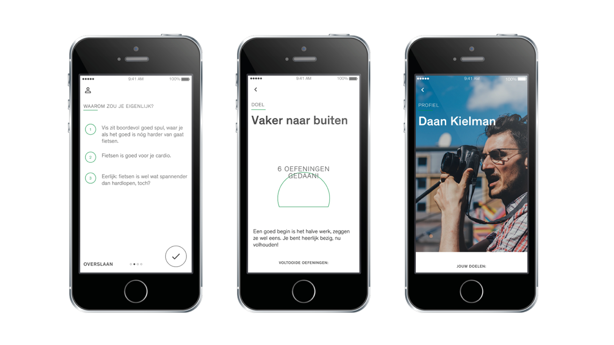
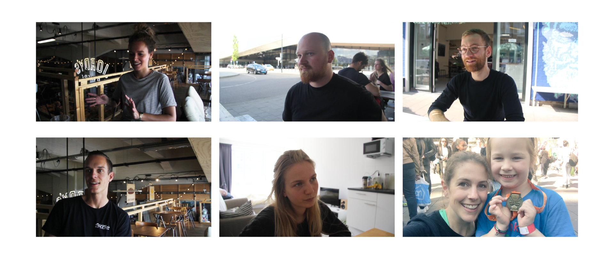
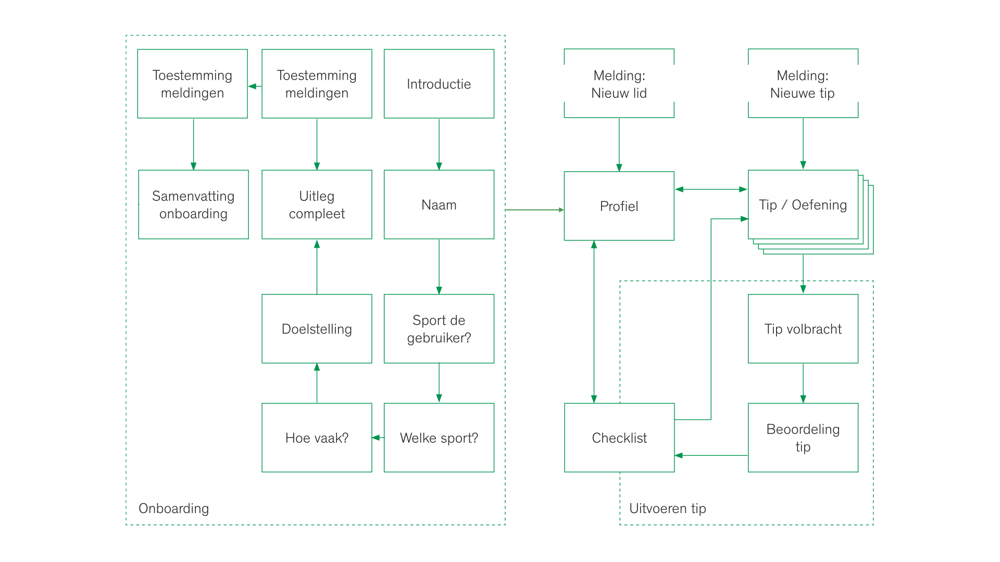
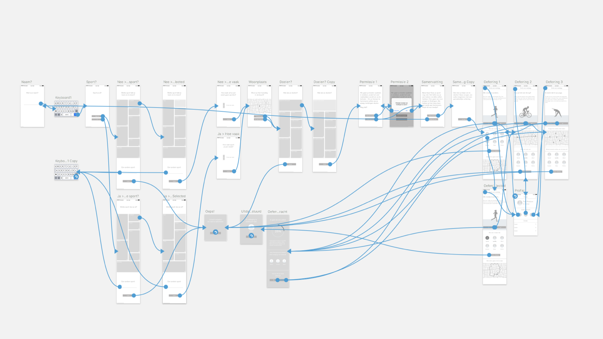
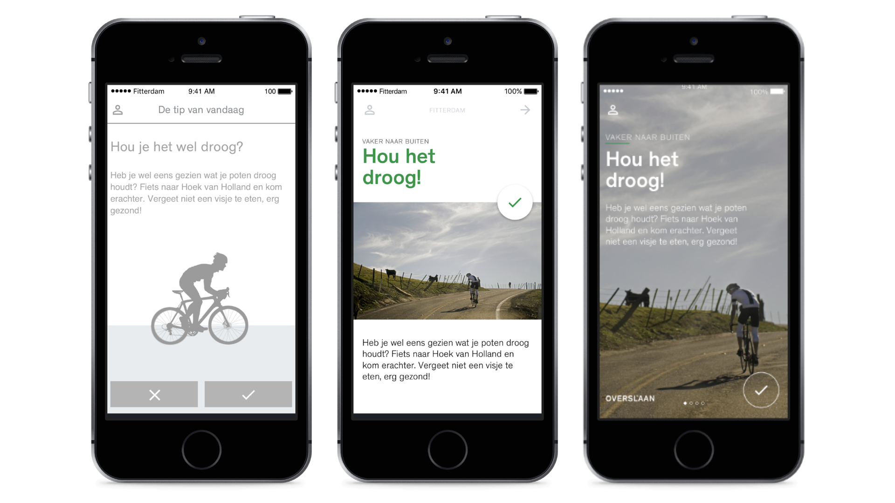

For my bachelor thesis, I made the app for Fitterdam. Fitterdam is a project that increases social cohesion by placing excercising objects in the public space. A way to encourage to people to use these objects is through an app. My task started with researching what an app can do to motivate people to excercise and keeps them off the couch.
To find out what motivates users to start excercising and continue to do so, I interviewed nine people considered as the target audience. I questioned them about their sporting habits, their motivation to start and what motivated them to continue. Parallel to the interviews I conducted desk research and found out human behaviour is dependant on three factors: motivation, ability, and a trigger.

This behaviour model for persuasive design, theorized by B.J. Fogg, helped me find out that the trigger was only thing the target audience was missing. The interviews showed that there was a lot of motivation to start excercising, and with the rise of cheap and accessible gyms everywhere the ability factor was certainly not missing.
So what triggers people to start, and to keep excercising? The interviews provided me with the answers:
- The social aspect. People like to have a buddy when excercising, to feel like they are sharing the same goal and effort with someone else.
- A positive approach and reinforcement. Celebrate every (small) victory. Failure is an option, there is always tomorrow.
- Combining excercise with daily activities. 'Sports' do not necessarily mean joining a club or buying an expensive road bike: taking the stairs instead of the elevators counts.
- Set goals (and divide them in manageable chunks). It makes it even better if you can cross them off a list.
When the user first starts in the app, they are taken through an onboarding process. This process explains how the app works, lets them fill in their current excercise habits, helps them set goals and lets them choose how often the app can send the user notifications. After completing the onboarding, the app provides the user with excercises that helps them complete their goal. Through the aforementioned notifications, the app lets them know when they have a new excercise to do in order to reach their goals.
With the user flow in order, I started making wireframes. Syncing my wireframes from Sketch to InVision, these wireframes were converted to a low-fidelity prototype for the first user test.
To find out if the app was coming along the right way, I invited members from the target audience to test the low-fidelity prototype. The test results gave me useful insights on the usability of the onboarding process and the app as a whole, which I used to move towards the final step in the process.
The visual design took two iterations to finish. I wanted a result that I was proud to present - and that was not the case after the first iteration. By giving images more room and incorporating tactility in the visual design, The second iteration felt more app-like.
What makes an app feel intuitive and fun to use? In my opinion, it's how an app reacts to the user's input. I wanted to give the app an extra dimension by adding motion to it and turned the visual design into a high-fidelity prototype using Principle.
I presented my research and the result of this 20 week process and graduated, earning a BSc in Communication and Multimedia Design.